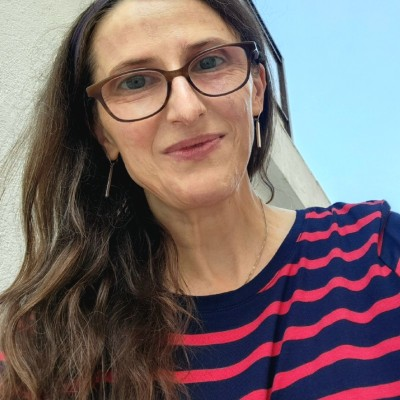

|
|
Cristina Nita-Rotaru
Professor of Computer Science
Associate Dean of Faculty
Khoury College of Computer and Information Sciences
Northeastern University
email: c.nitarotaru@neu.edu
office: ISEC 626
Map Directions
[ cnitarot
| nds2
| cyber
]
Research: network security, resilient distributed systems,
automated testing and verification
Conferences I am currently involved with: ICNP2018, NDSS 2019, EuroSys 2019,
CoNEXT 2018 EPIQ workshop (Evolution, Performance, and Interoperability of QUIC)
|
``There is only one success - to be able to spend your life in your own way.''
Christopher Morley

|
Cristina Nita-Rotaru is a Professor of Computer Science in the College of Computer and Information Science
at Northeastern University. Prior to joining Northeastern she was a faculty in the Department of Computer
Science at Purdue University from 2003 to 2015.
Her research lies at the intersection of security,
distributed systems, and computer networks. The overarching goal of her
work is designing and building secure and resilient distributed systems and network protocols,
with assurance that their deployed implementations provide their security, resilience, and performance goals.
Cristina Nita-Rotaru is a recipient of the NSF Career Award in 2006. She is also a recipient of
Purdue College of Science Research Award in 2013, Purdue Excellence in Research Award, Seeds for Success in 2012,
Purdue College of Science Leadership Award, 2012,
Purdue College of Science Undergraduate Advising Award in 2008, and
Purdue Teaching for Tomorrow Award in 2007.
She has served on the Technical Program Committee of numerous conferences in security, networking and distributed systems (IEEE S&P, USENIX Security, ACM CCS, NDSS, ACM Wisec, IEEE ICDCS, IEEE/IFIP DSN, ACM SIGCOMM, ACM CoNEXT, IEEE INFOCOM, IEEE ICNP, WWW).
She served as an Assistant Director for CERIAS (2011 - 2013).
She is a member of the steering committee of ACM Wisec and IEEE/IFIP DSN, and a member of the IFIP Working Group on Dependable Computing and Fault-tolerance.
She was an Associate Editor for
Elsevier Computer Communications (2008 - 2011),
IEEE Transactions on Computers (2011 - 2014),
ACM Transactions on Information Systems Security (2009 - 2013),
Computer Networks (2012 - 2014),
and IEEE Transactions on Mobile Computing (2011 - 2016), and
IEEE Transactions on Dependable and Secure Systems (2013 - 2017).
Cristina Nita-Rotaru holds a Ph.D in Computer Science from Johns Hopkins
University and a MS from Politehnica University of Bucharest, Romania.
She was born and grew up in Bucharest, Romania. She is an alumnus of
``Colegiul National Sfantul Sava''.
Current students:
- Berkcan Gurel
- Matthew Jagielski, co-advised with Alina Oprea
- Talha Ongun, co-advised with Alina Oprea
- Asad Salman
- Cliff Robinson, co-advised with Alina Oprea
- Caleb Wastler
- Connor Zanin, co-advised with Alan Mislove
- Anthony Peterson
- Jaison Titus
- Ben Weintraub
Former graduate students and postdocs that I had the privilege to work with at Purdue:
- Reza Curtmola, Ph.D. Johns Hopkins University, 2007, Associate Professor NJIT.
- Endadul Hoque, Ph.D. Dec. 2015, Assistant Professor, Florida International University.
- Samuel Jero, Ph.D. May 2018, MIT Lincoln Labs.
- Hyojeong Lee (co-advised with Prof. C. Killian), Ph.D. Sept. 2014, Google.
- Andrew Newell, Ph.D. Aug. 2014, Facebook.
- Rahul Potharaju, Ph.D. May 2014, Microsoft.
- Jeffrey Seibert, Ph. D, May 2012, Google.
- David Zage, Ph.D., May 2010, Intel.
- Jing Dong, Ph.D. Dec. 2009, Knight Knight Equity Markets.
- Mercan Topkara (co-advised with Prof. M. Atallah), Ph.D. July 2007, IBM T.J. Watson.
- Bogdan Carbunar (co-advised with Prof. A. Grama and Prof. J. Vitek), Ph.D., May 2005, Associate Professor, Florida International University.
- Luojie Xiang, M.S. May 2014, Apple.
- Camille Gaspard, M.S. May 2009. CISCO
- Aaron Walters, M.S. Thesis, May 2006, founding partner of Volatile Systems.
- Chi-Bun (Ben) Chan, M.S. Dec. 2004, Xilinx Inc.in April 2005.
- Supraja Krishnan, M.S. May 2018.
- Distributed Systems (CS 7610), Fall 2018. [www].
- Computer networks (CS 5700), Fall 2017. [www].
- Distributed systems (CS 7680), Spring 2017. [www].
- Network security (CS 6740), Spring 2016. [www].
Courses I taught as a faculty at Purdue University:
Graduate level:
- Distributed Systems (CS 505). [www ]
- Advanced Distributed Systems (CS 603).
- Information Security and Assurance(CS 526). [www ]
- Advanced Information Assurance (CS 626).
- Wireless Network Security (CS 590W).
- Research Seminar for Graduate Students (CS591C).
- Security Seminar (CS 590E).
- Cryptography (CS 555).
- Insider Threats to Information Systems (CS 590T).
- Security Topics in Networking and Distributed Systems (CS 590D).
Undergraduate level:
- Introduction to C (CS 240). [www]
- Introduction to Cryptography (CS 355). [www]
- Computer Security (CS 426).
- EPICS.
Conferences and workshops I am currently involved with: ICNP 2018, NDSS 2019, EuroSys 2019,
CoNEXT 2018 EPIQ workshop (Evolution, Performance, and Interoperability of QUIC)
Send your comments and questions to Cristina Nita-Rotaru
|
|
|